Tu vas construire un dé de 50 mm dans un logiciel de conception, de la feuille blanche jusqu'à la pièce prête à imprimer. Personne ne doit rester bloqué : chaque étape dit ce que tu dois voir.
5eOnshapeC7.2 · C7.62 séances de 55 minAucun risque électrique
🧭 Comment lire ce TP. En clair, ce que tu fais.
En italique coloré, ce que tu dois voir se
produire à l'écran — si tu ne le vois pas, ne continue pas : reprends l'étape.
Les encadrés orange préviennent des pièges. À la fin de chaque partie, une image te montre
ce que tu dois obtenir : compare, tu n'as besoin de personne pour te corriger.
Aide détaillée
1 · Ranger avant de commencer
Deux minutes, et tu retrouveras ton travail à la séance prochaine. Sans elles, tu recommenceras tout.
Ouvre Onshape dans le navigateur et connecte-toi avec le compte de la classe.La page Documents s'affiche, avec le bouton bleu Créer en haut à gauche.
À savoir avant de commencer :Ton écran n'affiche peut-être pas les mêmes mots que ce TP. Selon le réglage du compte, Onshape s'affiche en français ou en anglais — parfois à moitié. Les deux versions ont été constatées le même jour, sur le même document : l'outil s'appelle Extrudeur ou Extruder, le troisième onglet Retraite ou Retirer, le raccourci se lit décalage+e ou shift+e, et le bandeau du haut dit Principaux ou Main. Ce TP écrit les deux quand ça compte. Si un mot ne correspond pas au tien, survole le bouton : son infobulle donne le nom exact sur TON écran. Les icônes, elles, sont les mêmes partout.
Clique sur Créer, puis sur Document…Une fenêtre Nouveau document s'ouvre. Le champ Nom du document affiche Document sans titre en gris pâle : ce n'est pas un nom, c'est un texte d'attente. Il disparaîtra dès que tu taperas.
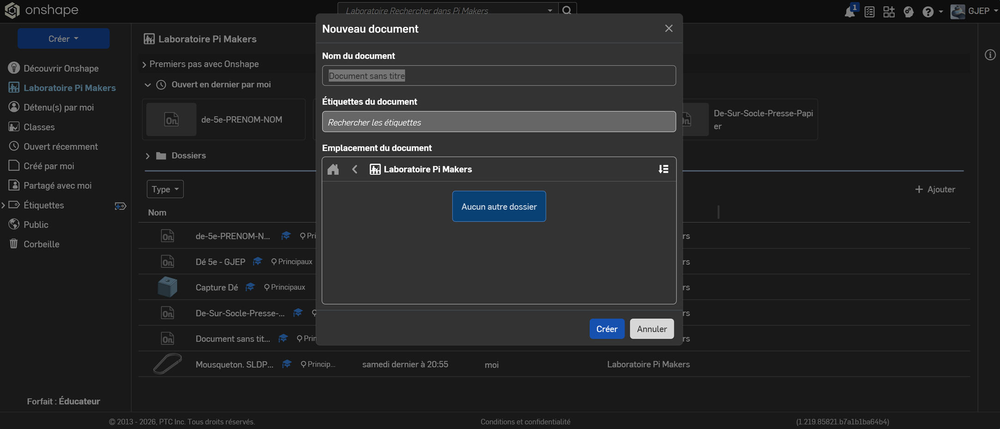
Le bouton Créer est toujours en haut à gauche, quelle que soit la page.
Dans Nom du document, saisis de-5e-PRENOM-NOM (sans accent), puis clique sur Créer.Le gris pâle laisse la place à ton texte, et le document apparaît sous ce nom dans la liste.
À savoir avant de commencer : Un document laissé sous le nom Document sans titre est introuvable la semaine suivante — surtout au milieu de vingt-sept autres qui portent le même. C'est la première cause de séance perdue en salle informatique.
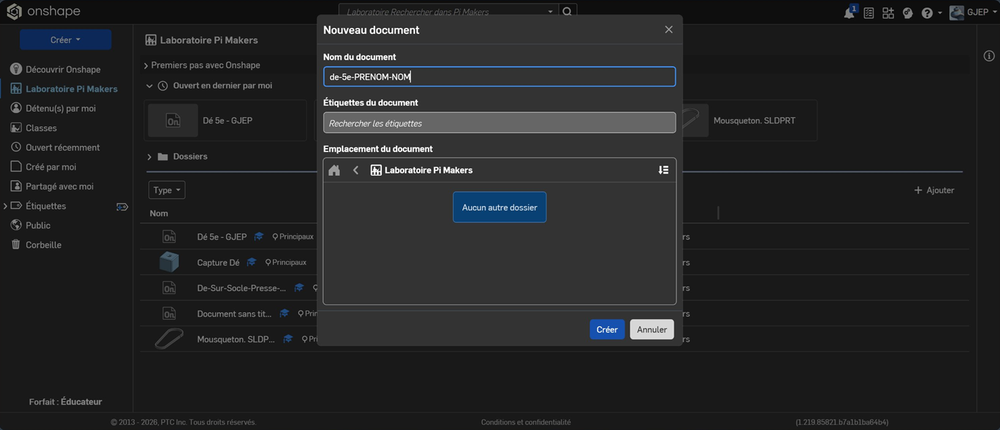
Le gris pâle a disparu : le nom est bien à toi.
Regarde en bas de la fenêtre : un onglet Partie Studio 1 est déjà là.C'est l'atelier où l'on dessine les pièces. Au centre, trois rectangles gris se croisent : ce sont les trois plans, comme trois feuilles posées dans l'espace.
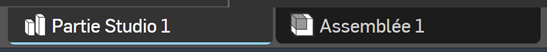
L'onglet s'appelle Partie Studio 1 — le « 1 » est un numéro, comme dans Esquisse 1 ou Extrudeur 1 : Onshape numérote tout ce qu'il crée. À côté, Assemblée 1 servira en 4e, quand il faudra tenir deux pièces ensemble.
Fais de la place : si un volet Représentations occupe toute la gauche de l'écran, ferme-le avec la croix ✕ en haut de ce volet.La zone de dessin s'élargit d'un coup : tu récupères près d'un quart de la largeur.
À savoir avant de commencer : Ce volet ne sert à rien pour ce TP : il affiche des mesures de performance de l'affichage. Le fermer ne supprime rien et ne gêne aucune étape de la séance. Il se rouvre par l'une des icônes de la barre verticale de gauche : survole-les, leurs infobulles les nomment. Et si tu ne le retrouves pas, ce n'est pas grave — constaté sur poste réel : même en cherchant, on ne remet pas la main dessus facilement, et le TP se termine très bien sans lui.
Cherche un bouton Enregistrer dans la barre d'outils.Il n'y en a pas. Onshape enregistre tout seul, en continu : chaque geste est écrit dès que tu le fais. Ton travail est dans ton document, et tu le retrouveras depuis n'importe quel poste avec le même compte.
À savoir avant de commencer : C'est la grande différence avec un logiciel installé sur l'ordinateur. Ne cherche pas la disquette : il n'y en a pas, et ce n'est pas un oubli.
Vérifie-le tout de suite : clique sur le logo Onshape, en haut à gauche, puis rouvre ton document.La page Documents s'affiche, et ton fichier y figure deux fois : dans la bande Ouvert en dernier par moi, en haut, et dans la liste du dessous avec sa date. Tu le rouvres, et tout est là.
À savoir avant de commencer : C'est ici que le nom prend tout son sens. Repère la ligne « Document sans titre » dans la liste : personne ne sait ce qu'elle contient, pas même celui qui l'a créée.
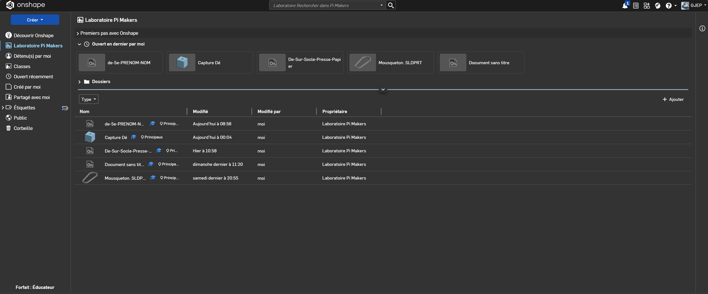
Deux chemins pour un même document : la bande du haut va au plus vite quand on vient de travailler dessus, la liste du dessous sert quand le fichier date d'il y a plusieurs semaines — elle se trie par nom ou par date.
🎯 Tu peux passer à la suite quand : ton nom apparaît en haut de la fenêtre, et tu saurais retrouver ce document demain.
💾 Point de reprise. Tu n'as rien à enregistrer : c'est déjà fait, tout seul, depuis le début. Si le poste redémarrait maintenant, tu retrouverais ton travail exactement ici.
Aide détaillée
2 · Esquisser le carré
Une pièce en 3D commence toujours par un dessin en 2D, posé sur un plan. Ce dessin s'appelle une esquisse.
Clique sur Esquisse, dans la barre d'outils en haut à gauche.Le document est encore vide : la liste de gauche indique Fonctions (4) — l'origine et les trois plans, rien d'autre — et Pièces (0). Après ton clic, la barre du haut change et se remplit d'outils de dessin.
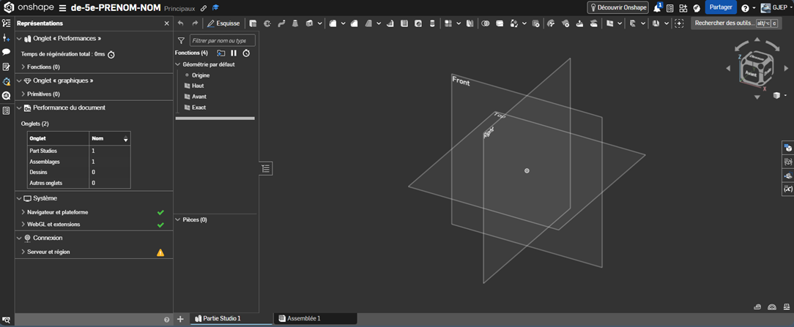
Voilà d'où tu pars : quatre fonctions qui ne sont que des repères, et aucune matière. Tout ce qui suivra viendra de toi.
Vérifie que tu es bien dans l'esquisse : le panneau Esquisse 1 est ouvert en haut à gauche, avec sa coche verte.Si tu vois ligne, rectangle et cercle dans la barre, tu es dans l'esquisse. Sinon tu es sorti : double-clique sur Esquisse 1 dans la liste de gauche pour y revenir.
À savoir avant de commencer : Un clic dans la zone 3D en dehors de l'esquisse sélectionne le plan lui-même : il devient tout orange et le bas de l'écran affiche « Distance minimale : 0,000 mm ». Ce n'est pas une erreur, mais tu ne dessines plus. Échap, et reviens dans l'esquisse.
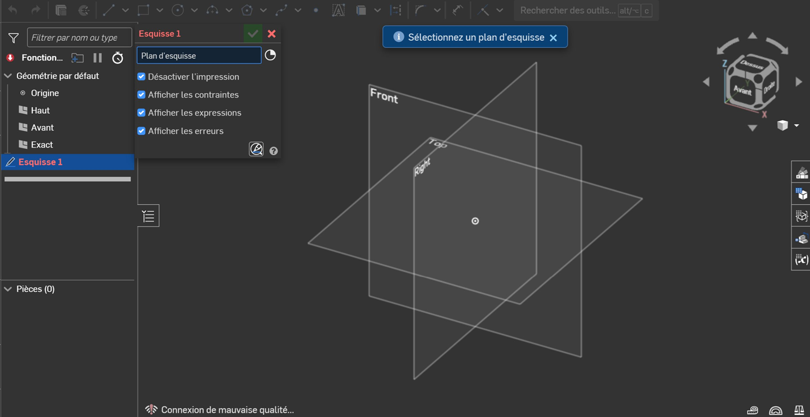
Deux signes que tu es bien dans l'esquisse : le panneau Esquisse 1 avec sa coche verte, et le message qui attend ton plan. La barre du haut, elle, a changé : ligne, rectangle, cercle.
Dans la liste de gauche, clique sur le plan Haut.Le champ Plan d'esquisse se remplit avec Haut du plan, la ligne Esquisse 1 apparaît dans l'arbre, et le plan choisi se cercle de bleu dans la vue.
À savoir avant de commencer :Haut est le plan horizontal, celui du dessus : on le choisit quand l'objet doit être posé à plat, comme un dé sur une table. Attention à un piège du logiciel : dans la liste de gauche les plans s'appellent Haut, Avant et Exact, mais les étiquettes dessinées dans la zone 3D sont restées en anglais — Top, Front, Right. C'est le même plan, écrit dans deux langues sur le même écran.
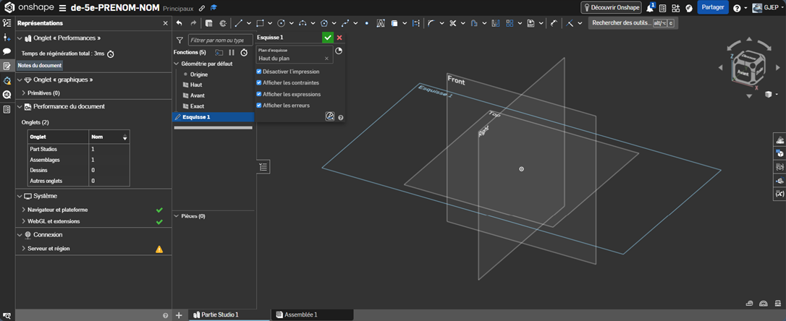
Trois signes que le plan est pris, et pas un seul : le champ rempli, la ligne dans l'arbre, le cadre bleu dans la vue. Quand un seul manque, c'est que le clic n'a pas porté sur le plan.
Pour te placer bien en face du plan, appuie sur la touche N du clavier.Le plan pivote et se met à plat devant toi, comme une feuille posée sur la table. Deux lignes se croisent au centre : c'est l'origine. En haut à droite, le petit cube affiche Dessus, et un cadre bleu marqué Esquisse 1 encadre la zone de dessin.
À savoir avant de commencer : N comme « normal à l'écran ». Retiens ce raccourci : c'est celui qu'on utilise le plus souvent, et il évite de viser le cube d'orientation en haut à droite — celui qui affiche Dessus quand tu es bien placé.
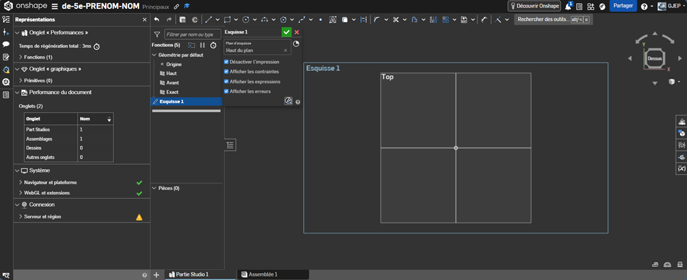
Le cadre bleu et l'étiquette Esquisse 1 délimitent ta feuille de dessin : à l'intérieur tu dessines, à l'extérieur tu cliques sur autre chose.
Ouvre la flèche à côté de l'outil rectangle et choisis Rectangle à partir du centre.Un menu s'ouvre avec trois entrées : Rectangle par sommet, Rectangle à partir du centre et Rectangle aligné. Chacune porte sa lettre-raccourci à droite.
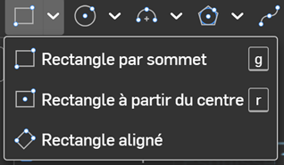
À partir du centre, et pas par sommet : c'est ce choix qui placera le dé pile au milieu, sans avoir à le recentrer ensuite.
⚠️ Les lettres à droite du menu sont des raccourcis : g pour le rectangle par sommet, r pour celui à partir du centre. Tu peux les taper directement, sans ouvrir le menu.
Un outil de dessin reste actif tant que tu ne le quittes pas. Pour en changer, le plus sûr est de cliquer directement sur l'outil suivant dans la barre du haut.Le nouvel outil s'allume dans la barre, et le pointeur change de forme. L'outil précédent s'éteint.
À savoir avant de commencer : La touche Échap est censée quitter l'outil, mais elle ne libère pas toujours l'outil rectangle : constaté sur poste réel. Ne t'acharne pas dessus — clique sur l'outil dont tu as besoin, c'est immédiat. Et si tu « n'arrives plus à cliquer sur rien », c'est presque toujours qu'un outil de dessin est encore actif.
Clique sur l'origine, écarte la souris, et clique une seconde fois.Un rectangle bleu apparaît, avec de petites icônes autour de lui : ce sont les contraintes que le logiciel a posées tout seul — les angles droits, l'égalité des côtés, et le point du centre accroché à l'origine.
À savoir avant de commencer : Ne cherche pas à tomber juste : la taille exacte se règle à l'étape suivante. Trace n'importe quel rectangle et avance.
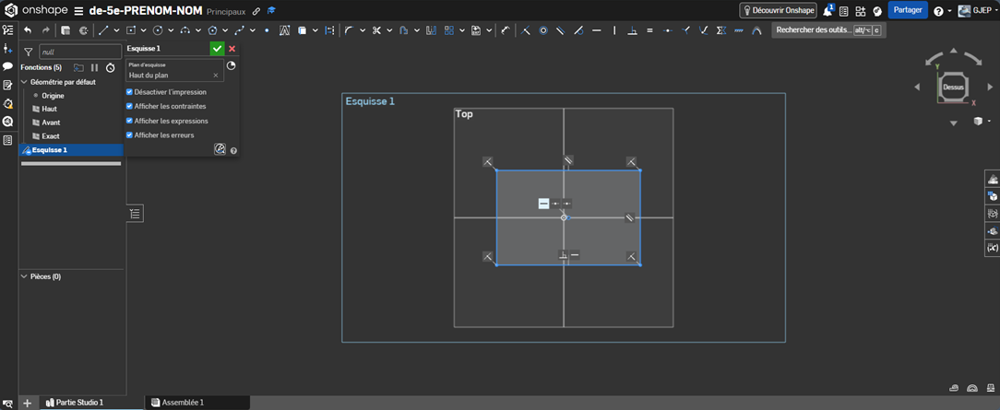
Le tracé est bleu : il existe, mais sa taille n'est pas encore fixée. C'est la cote qui la fixera, et il passera au noir.
Regarde la couleur des traits.Ce qui est noir est fixé et ne bougera plus. Ce qui est bleu est encore libre : tu peux l'attraper et le déplacer. Le logiciel te dit en permanence où il en est — cette lecture-là te servira dans tous les logiciels de conception.
⚠️ La couleur est entièrement libre : c'est ton dé.
Clique sur l'outil Cote — l'icône en double flèche, raccourci d. Cliquer sur cet outil suffit à quitter le rectangle. Puis clique sur le côté du haut, éloigne la souris, et clique une seconde fois pour poser la cote.Une petite case s'ouvre sur le dessin, avec un nombre à virgule déjà sélectionné. C'est là qu'on tape la valeur.
À savoir avant de commencer : Ne cherche pas la case en bas de l'écran : la mention Distance minimale qu'on y lit est un afficheur de mesure, pas un champ de saisie. La case où l'on tape apparaît toujours à côté de la cote, sur le dessin.
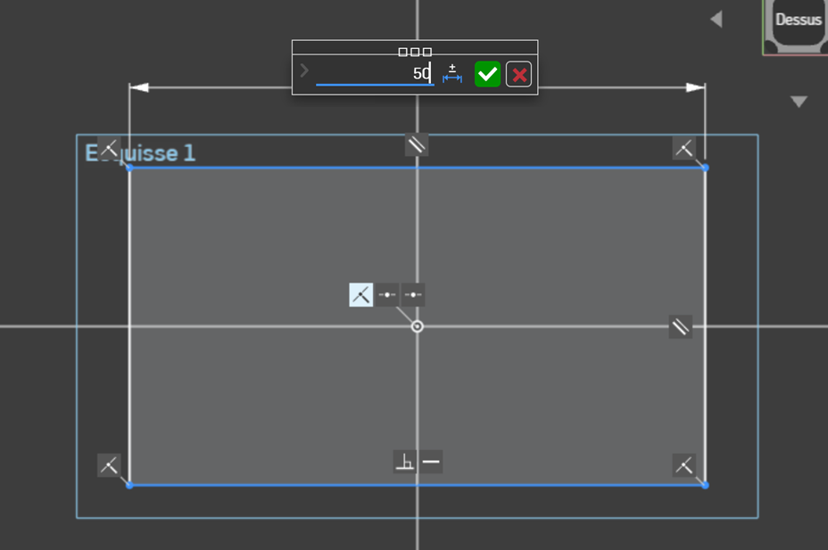
Ce nombre est un exemple : c'est la taille de ton rectangle à toi, pas la valeur à saisir.
⚠️ Cette valeur est un exemple : ne la recopie pas sans réfléchir, choisis la tienne.
Tape 50 et valide avec Entrée.Le rectangle change de taille immédiatement, et la cote affiche 50.
À savoir avant de commencer : Si Onshape écrit 90° au lieu d'une longueur, c'est que ta cote a été posée sur la ligne d'un plan : il a compris « angle ». Annule et repose-la un peu plus loin. Ce n'est pas une faute de ta part.
Recommence pour le côté de gauche, et tape 50.Tous les traits deviennent noirs : l'esquisse est complètement définie, plus rien ne peut bouger.
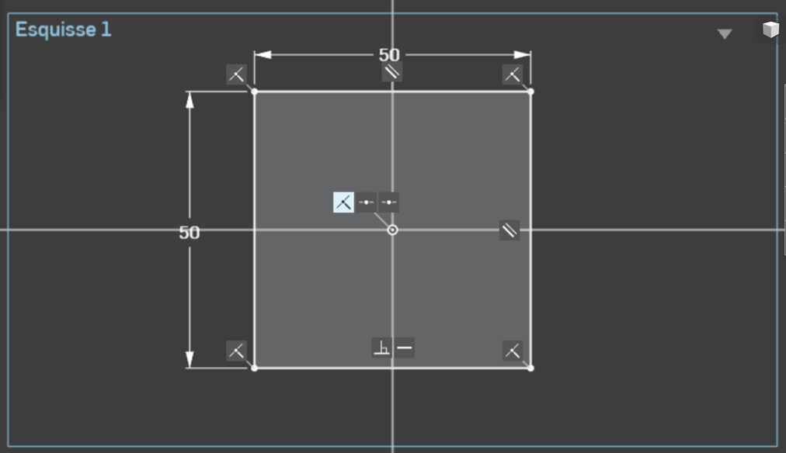
Tout en noir : c'est le signal que le dessin est verrouillé.
Valide l'esquisse avec la coche verte, en haut du panneau.Le panneau se ferme et Esquisse 1 s'ajoute à la liste de gauche.
Ce que tu dois obtenir :
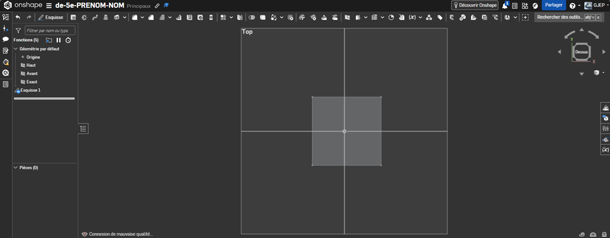
🎯 Tu peux passer à la suite quand : ton carré mesure 50 sur 50, tous ses traits sont noirs, et Esquisse 1 apparaît dans la liste.
💾 Point de reprise. Tu n'as rien à enregistrer : c'est déjà fait, tout seul, depuis le début. Si le poste redémarrait maintenant, tu retrouverais ton travail exactement ici.
Aide détaillée
3 · Donner du volume : l'extrusion
Un dessin plat ne s'imprime pas. On lui donne une épaisseur : c'est l'extrusion. Le carré va monter de 50 mm et devenir un cube.
Trois gestes se ressemblent et ne veulent pas dire la même chose. Essaie-les sur Esquisse 1 : c'est la seule fonction que tu aies pour l'instant, elle est parfaite pour ça.Rien encore : les trois essais qui suivent te montreront la différence.
Essaie le premier : le double-clic. Double-clique sur Esquisse 1 dans l'arbre de gauche.Son panneau se rouvre, et les cotes de 50 réapparaissent sur le dessin. Tu es revenu·e dans l'esquisse : tu pourrais changer une valeur.
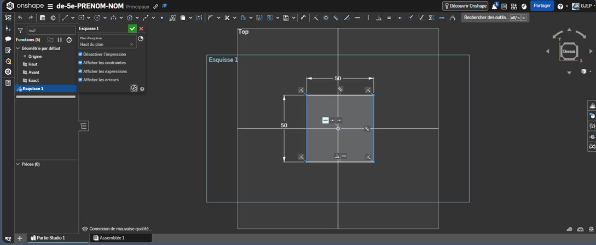
Double-clic = je veux modifier. C'est aussi la seule façon de revoir les cotes : hors édition, Onshape les masque.
Le deuxième : le clic simple. Ferme d'abord l'esquisse avec la coche verte, puis clique une seule fois sur Esquisse 1.Le carré devient orange dans la vue : il est sélectionné, pas ouvert. Aucun panneau ne s'affiche.
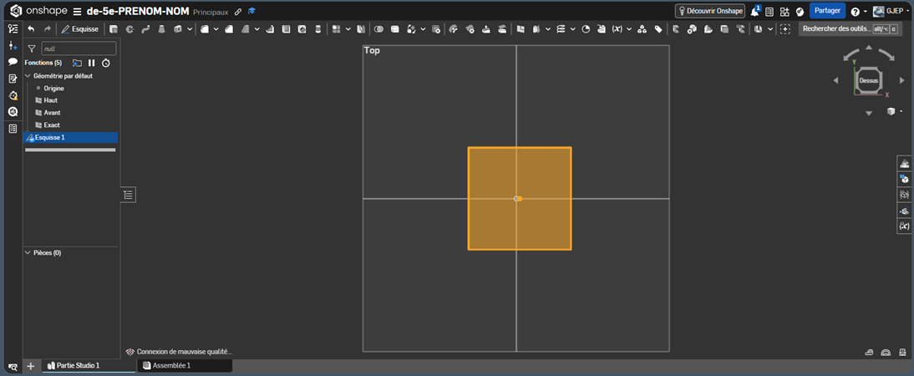
Clic simple = je choisis. Cette sélection sert quand un panneau attend quelque chose — c'est ainsi qu'on dira à l'extrusion quoi extruder.
Le troisième : la coche verte. Clique dans le vide pour désélectionner.Le carré redevient gris, sans panneau ni surbrillance : l'esquisse existe, elle n'est ni ouverte ni choisie.
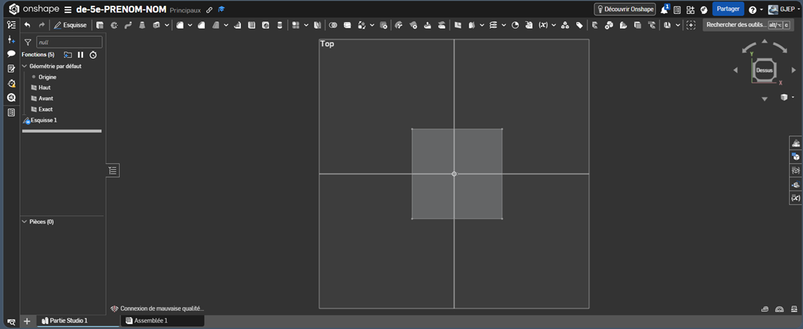
La coche verte = j'ai fini, jamais « continue ». Tant qu'un panneau est ouvert, l'arbre et la vue 3D servent à le remplir.
Avant d'extruder, vérifie ton carré : double-clique sur Esquisse 1 pour la rouvrir.Un carré, quatre traits, et deux cotes de 50. Referme ensuite avec la coche verte.
À savoir avant de commencer : Une esquisse peut être vide sans le dire : elle apparaît quand même dans l'arbre, elle s'ouvre, elle se referme — mais il n'y a aucun tracé dedans, et alors l'extrusion ne peut rien fabriquer. Ça arrive après plusieurs annulations. Si tu ne vois qu'un grand rectangle gris marqué « Top » et deux axes, c'est le plan, pas ton dessin : l'esquisse est vide, il faut redessiner le carré. Pour en avoir le cœur net, prends Zoomer pour ajuster dans le menu du petit cube : le logiciel recadre sur tout ce qui existe. Si rien n'apparaît, c'est qu'il n'y a rien.
Clique sur l'outil Extrudeur dans la barre d'outils (son infobulle dit « Extrudeur (décalage+e) » : « décalage », c'est la touche Maj).
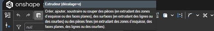
Survole un bouton avant de cliquer : son infobulle donne son nom exact et ce qu'il fait. C'est le moyen de retrouver n'importe quel outil dont tu as oublié la place — et de vérifier qu'un TP dit vrai.Un panneau Extrudeur 1 s'ouvre, réglé sur Solide et Nouveau. Le champ Faces et zones d'esquisse à extruder est vide et encadré de bleu : il attend que tu lui dises quoi faire monter.
À savoir avant de commencer : Dans ce panneau, deux choses sont déjà réglées et une seule est vide, ne les confonds pas. Sont réglés : le type Borgne et une profondeur de 25 mm — ce n'est pas ta valeur, c'est celle que le logiciel propose par défaut, tu vas la remplacer. Est vide : le champ Faces et zones d'esquisse à extruder, tout en haut, et c'est lui qui compte. « Borgne » veut dire que l'extrusion s'arrête à la distance que tu donnes, au lieu d'aller jusqu'à une autre pièce.
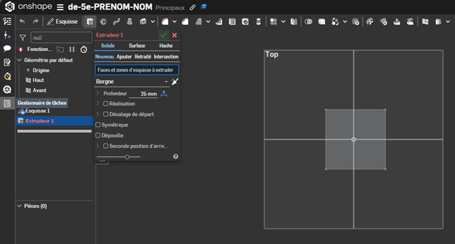
Trois signes du même manque : le champ vide, Extrudeur 1 en rouge dans l'arbre, et Pièces (0). Le rouge n'est pas une faute de ta part : il dit simplement que l'extrusion ne sait pas encore quoi faire monter.
Clique à l'intérieur du carré, dans la vue 3D.La surface du carré se colore et le champ Faces et zones d'esquisse à extruder se remplit. C'est ça qui va monter.
À savoir avant de commencer : Étape la plus sautée du palier, et elle ne pardonne pas : si le champ reste vide, l'extrusion échoue. Extrudeur 1 s'écrit alors en rouge dans l'arbre de gauche et la liste indique Pièces (0) — aucune matière n'a été créée. Pour réparer : double-clic sur Extrudeur 1 (le clic droit ne propose pas « Modifier » : seulement Renommer, Exclure, Commentaire), puis clique dans le carré — ou, plus sûr, un seul clic sur « Esquisse 1 » dans l'arbre, ce qui prend l'esquisse entière sans avoir à viser. Constaté sur poste réel. Attention juste après ce clic : Onshape bascule tout seul de l'onglet Nouveau vers Ajouter. Si tu ne vas pas ensuite sur le troisième onglet, tu fabriqueras un plot qui sort au lieu d'un creux. Constaté sur poste réel.
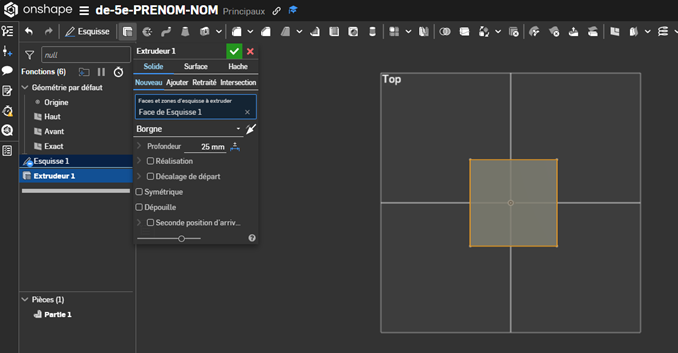
Le rouge a disparu et le champ porte un nom : Face de Esquisse 1. L'extrusion sait maintenant quoi faire monter.
Dans le champ Profondeur, efface 25 et saisis 50. Laisse Nouveau sélectionné : il n'y a encore aucune matière à laquelle ajouter quoi que ce soit.L'aperçu s'ajuste : la hauteur devient égale au côté. C'est un cube.
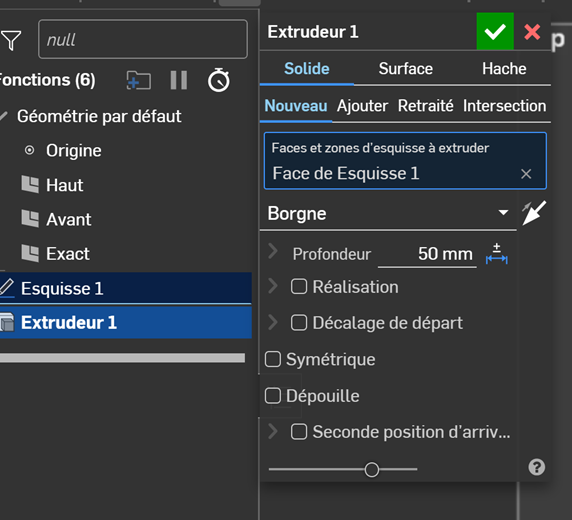
La profondeur est passée de 25 à 50 : hauteur égale au côté, donc un cube.
Valide avec la coche verte.Le cube devient gris plein. Dans la liste de gauche, Pièces (1) apparaît : il existe maintenant de la matière.
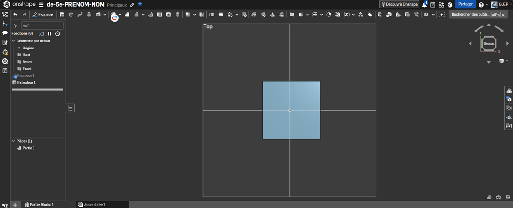
Pièces (1) — Partie 1 : c'est la preuve qu'il existe de la matière. Tant que ce compteur dit (0), il n'y a rien à imprimer, quoi qu'affiche la vue.
Va chercher le cube d'orientation, en haut à droite de la vue : c'est le petit cube qui affiche Dessus. Juste en dessous, une petite icône de cube avec une flèche ▾ ouvre un menu — choisis-y Isométrique.
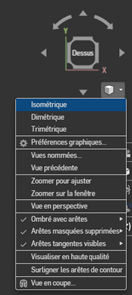
Retiens deux autres lignes de ce menu : Zoomer pour ajuster, qui recadre sur tout ce qui existe — pratique quand on ne trouve plus son dessin —, et Vue en coupe, qui servira en 3e pour regarder l'intérieur d'un boîtier fermé.Le cube se montre en perspective, trois faces visibles.
À savoir avant de commencer : Si tu es resté·e en vue Dessus, un cube ressemble à un carré : on ne voit pas qu'il a de l'épaisseur. Le volume existe quand même — c'est la caméra qui le cache, pas la pièce.
Ce que tu dois obtenir :
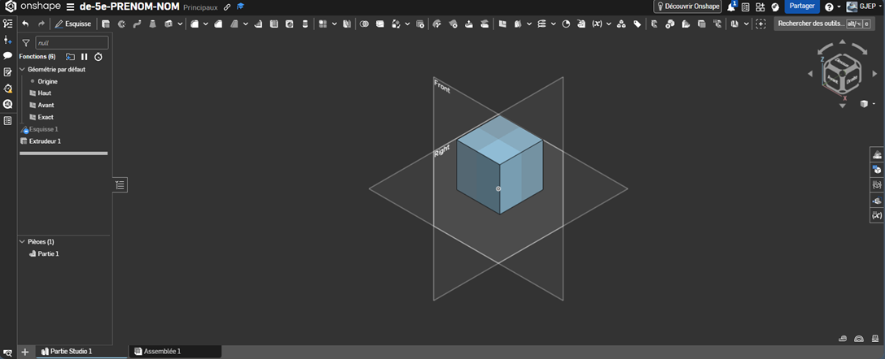
🎯 Tu peux passer à la suite quand : tu vois un cube en perspective, et la liste indique Pièces (1). Les trois grands rectangles gris autour de lui sont les plans de départ, pas de la matière : ils ne s'imprimeront pas, et ils ne comptent pas dans le poids de la pièce.
💾 Point de reprise. Tu n'as rien à enregistrer : c'est déjà fait, tout seul, depuis le début. Si le poste redémarrait maintenant, tu retrouverais ton travail exactement ici.
Aide détaillée
4 · La face du 1 — un cercle et un creux
Les points du dé sont des creux. On dessine un cercle sur une face, puis on enlève de la matière.
Clique sur Esquisse, puis clique directement sur la face du dessus du cube.
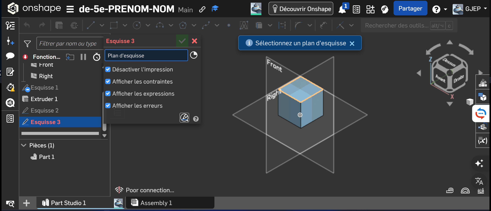
La face se colore et se met à plat devant toi : on peut dessiner dessus comme sur une feuille.
À savoir avant de commencer : On esquisse soit sur un plan, soit sur une face de la pièce. C'est la même chose pour le logiciel.
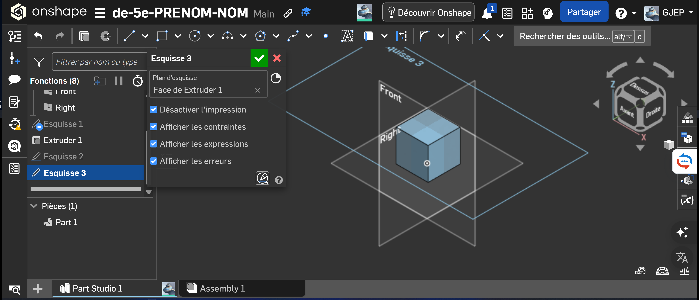
La vue ne se met PAS à plat toute seule — on reste en perspective. C'est le geste suivant qui redresse. Constaté sur poste réel.
Appuie sur la touche N pour te placer bien en face, puis zoome à la molette.La face vient à plat devant toi, et le cube d'orientation affiche Dessus.
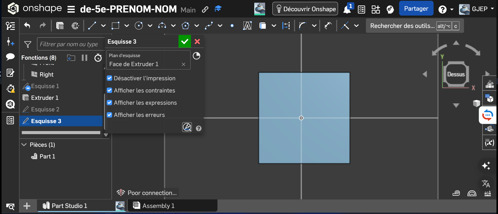
Sans ce redressement, coter revient à viser un losange.
Choisis l'outil Cercle, clique près du centre de la face, écarte la souris et clique.
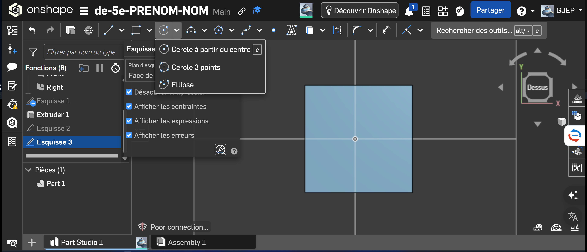
Un cercle apparaît, encore bleu : il n'est ni placé ni dimensionné.
À savoir avant de commencer : L'outil cercle propose plusieurs façons de faire, dans sa petite flèche : à partir du centre, par 3 points, ellipse. Prends la première : tu cliques le centre, puis tu écartes.
Avec l'outil Cote (raccourci d), cote la distance du bord gauche au centre du cercle : 25.Le cercle se déplace tout seul pour respecter la cote.
Fais de même depuis le bord du haut : 25.Le cercle est maintenant au milieu exact de la face. Il reste gros et bleu : sa position est fixée, pas encore sa taille. C'est la cote suivante qui la fixera.
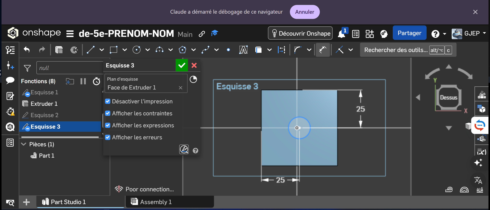
Clique sur le cercle lui-même, écarte la souris, clique pour poser la cote — puis double-clique sur le nombre et tape 10.Le cercle rétrécit d'un coup à sa taille définitive et tous les traits passent au noir : l'esquisse est entièrement contrainte.
À savoir avant de commencer :La cote de diamètre ne se comporte pas comme les autres. Sur une cote de distance, la petite case de saisie s'ouvre toute seule dès que tu poses la cote. Sur un diamètre, elle ne s'ouvre pas : la cote est posée, mais rien ne se passe tant que tu n'as pas double-cliqué sur le nombre. Constaté sur poste réel — c'est là que la main se lève. Bonne nouvelle en revanche : l'outil Cote reste actif d'une cote à l'autre, tu n'as pas à le reprendre à chaque fois.
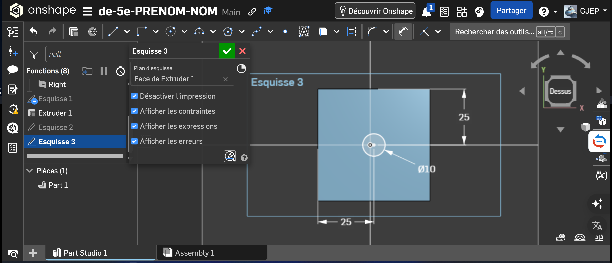
Valide l'esquisse, puis clique sur Extrudeur.Le panneau s'ouvre, avec l'aperçu d'un cylindre qui sort de la face.
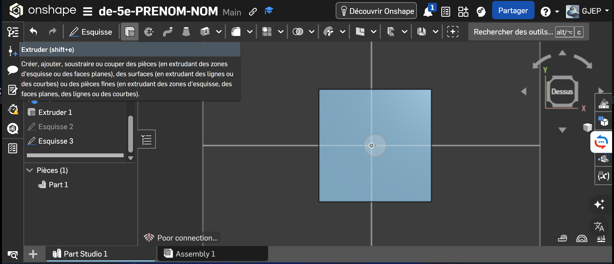
Clique à l'intérieur du carré, dans la vue 3D.La surface du carré se colore et le champ Faces et zones d'esquisse à extruder se remplit. C'est ça qui va monter.
À savoir avant de commencer : Même piquet qu'au palier précédent : sans zone sélectionnée, rien ne se passe. Attention juste après ce clic : Onshape bascule tout seul de l'onglet Nouveau vers Ajouter. Si tu ne vas pas ensuite sur le troisième onglet, tu fabriqueras un plot qui sort au lieu d'un creux. Constaté sur poste réel.
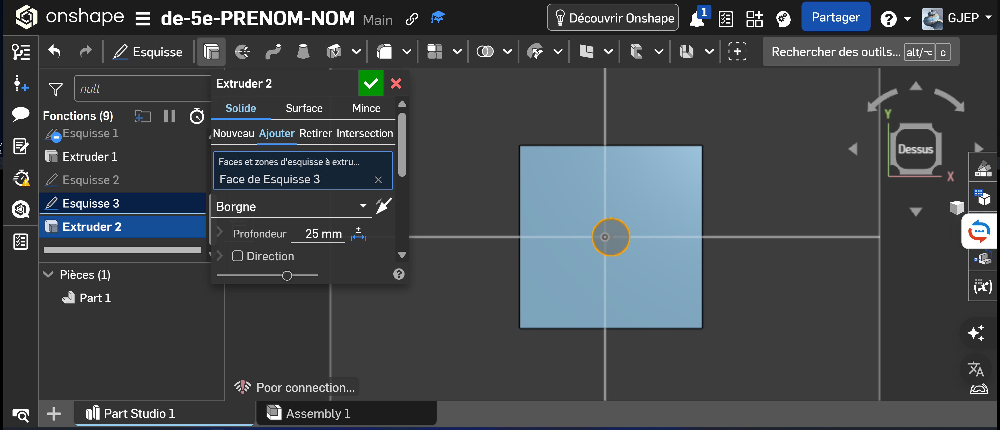
Choisis Retraité (ou Retirer) — le troisième onglet, après Nouveau et Ajouter —, règle la Profondeur à 1.5, puis valide.
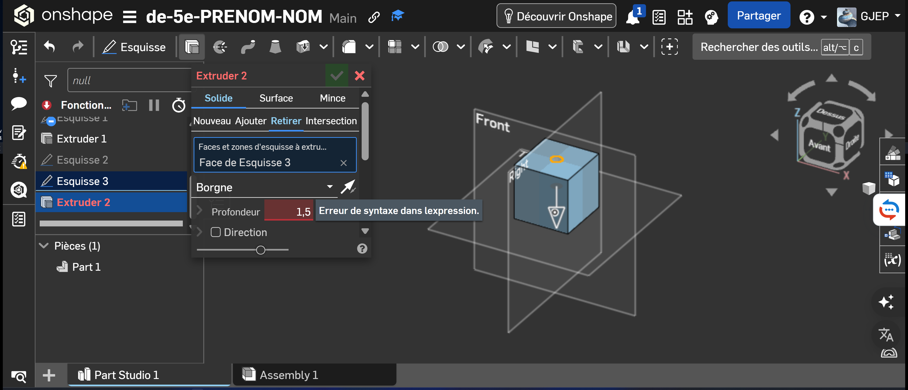
Voilà à quoi ressemble l'erreur si tu tapes 1,5 : tout passe au rouge et la coche verte s'éteint. Tape 1.5.Le cylindre se creuse dans la face : le premier point du dé est fait.
À savoir avant de commencer :Tape le nombre avec un POINT, jamais une virgule.1.5 et non 1,5 : la virgule fait passer le champ en rouge, désactive la coche verte, et Onshape affiche « Erreur de syntaxe dans lexpression. » — avec sa propre faute de frappe. Constaté sur poste réel. C'est le piège n°1 de ce TP pour des élèves français.
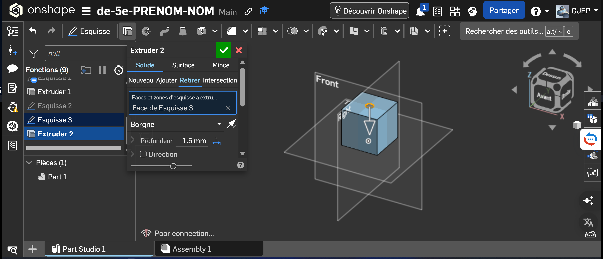
Retraite et non Ajouter : c'est le seul réglage qui change tout. Le mot est celui d'Onshape en français ; ailleurs on dit « enlèvement de matière ».
⚠️ Pourquoi si peu ? Un point de dé n'est pas un trou : c'est un petit creux. Sur un dé de 50 mm, 1,5 mm suffit — mesuré sur la pièce, ça retire 111 mm³ de matière. À 5 mm on creuserait un puits aussi profond que le rayon du point.
Vérifie ton creux plutôt que de le croire : outil Mesure, puis clique le bord du creux.Le panneau affiche Diamètre : 10.000 mm. En sélectionnant le fond puis la face du dessus, il affiche 1.500 mm.
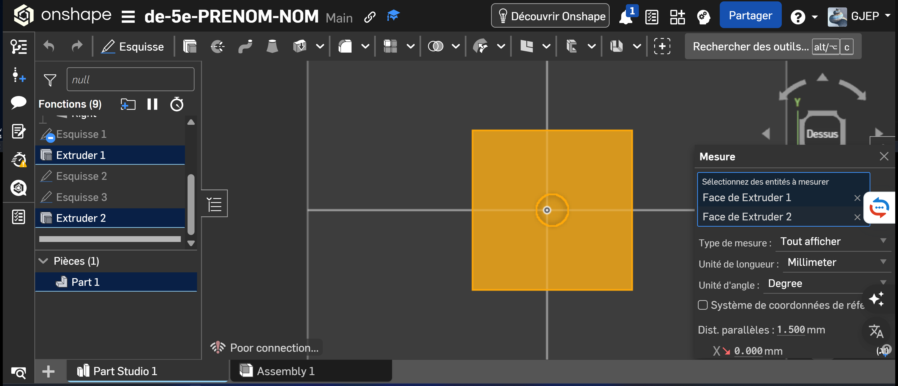
Mesurer sa propre pièce, c'est le geste du technicien : on ne dit pas « ça a l'air bon », on donne un nombre.
Ce que tu dois obtenir :
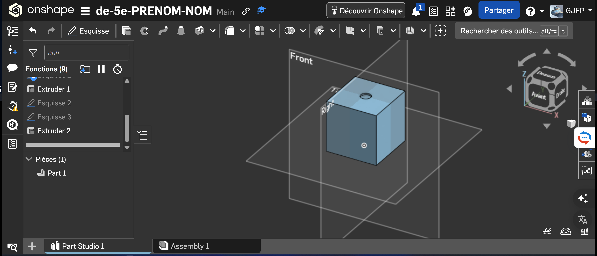
🎯 Tu peux passer à la suite quand : un creux est visible au milieu de la face, et la pièce est toujours une seule pièce.
💾 Point de reprise. Tu n'as rien à enregistrer : c'est déjà fait, tout seul, depuis le début. Si le poste redémarrait maintenant, tu retrouverais ton travail exactement ici.
Aide allégée
5 · La face du 6
Tu connais les gestes maintenant : esquisse sur la face, cercles, cotes, enlèvement. On ne redonne que les valeurs.
Fais pivoter la pièce pour voir la face opposée à celle du 1, puis démarre une esquisse dessus.La face choisie se met à plat devant toi.
À savoir avant de commencer : Une fois à plat, rien ne distingue la face du 6 de celle du 1 : les deux sont un carré uni, et le champ affiche Face de … dans les deux cas. Le seul repère sûr est le cube d'orientation, en haut à droite : il doit afficher Dessous. Sans ce contrôle, on recreuse la face du 1 sans s'en apercevoir. Constaté sur poste réel.
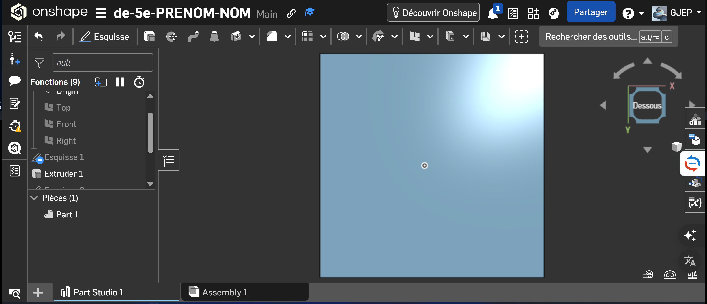
Avant de dessiner, masque les trois plans de départ : clic droit sur l'un d'eux dans l'arbre, puis Masquer.Les grands rectangles gris disparaissent ; le cube reste seul à l'écran.
À savoir avant de commencer : Ces plans sont immenses et attrapent tous les clics « dans le vide » : on croit désélectionner, on sélectionne un plan. Les masquer ne supprime rien — on les fait réapparaître par Afficher tou(te)s les plans. Constaté sur poste réel.
Trace six cercles : deux colonnes de trois. Cote le premier à 11 du bord gauche et 11 du bord du haut, diamètre 10.Le premier cercle se met en place et passe au noir.
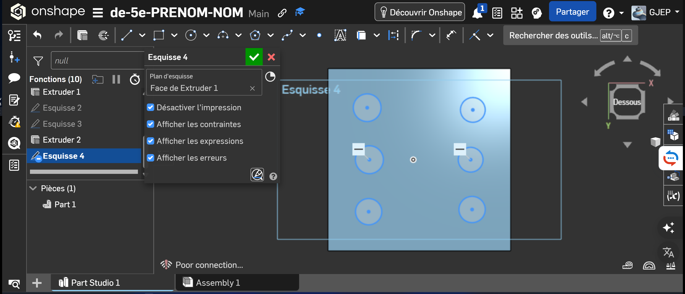
Cote les autres : les colonnes à 11 et 39 du bord gauche, les lignes à 11 et 39 du bord du haut.
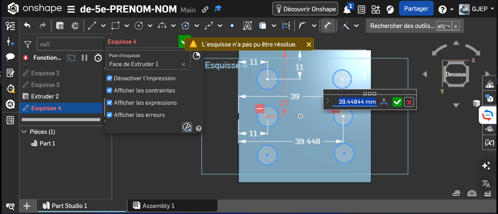
Voilà ce qui arrive à la huitième cote : le message ne dit pas laquelle est en trop.Les six cercles se rangent en deux colonnes de trois.
À savoir avant de commencer :Ne cote pas les douze positions ! Onshape aligne tout seul les cercles entre eux : à la huitième cote, l'esquisse est sur-contrainte et refuse de se résoudre — le message dit « L'esquisse n'a pas pu être résolue. » sans dire quelle cote est de trop. Sept cotes suffisent pour les six cercles. Constaté sur poste réel.
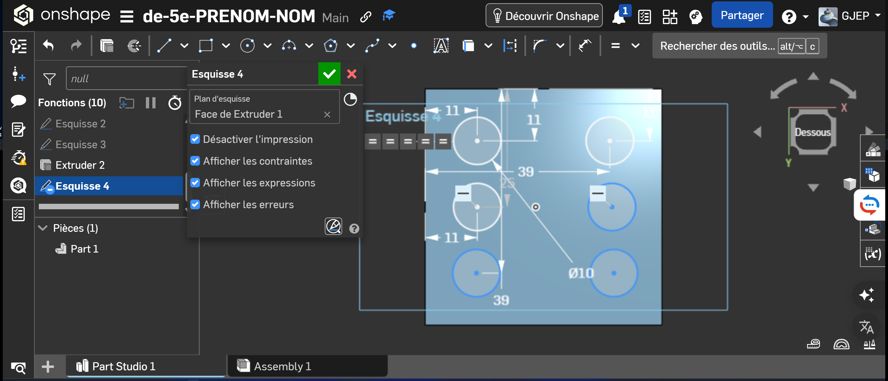
Cote un seul cercle à 10 de diamètre, puis sélectionne les six cercles et applique la contrainte Égal (touche e).Les six cercles prennent la même taille d'un coup.
À savoir avant de commencer : Coter un seul diamètre ne suffit pas : les autres restent petits. Les contraintes d'égalité qu'Onshape pose automatiquement pendant le tracé ne relient pas les six cercles. Il faut les sélectionner tous et leur dire qu'ils sont égaux — un clic, et six cercles changent ensemble. C'est déjà l'idée du paramétrique : une règle plutôt que six valeurs.
Valide, puis Extrudeur → Retraité (ou Retirer), profondeur 1.5.Les six creux apparaissent ensemble.
À savoir avant de commencer :Tape le nombre avec un POINT, jamais une virgule.1.5 et non 1,5 : la virgule fait passer le champ en rouge, désactive la coche verte, et Onshape affiche « Erreur de syntaxe dans lexpression. » — avec sa propre faute de frappe. Constaté sur poste réel. C'est le piège n°1 de ce TP pour des élèves français.
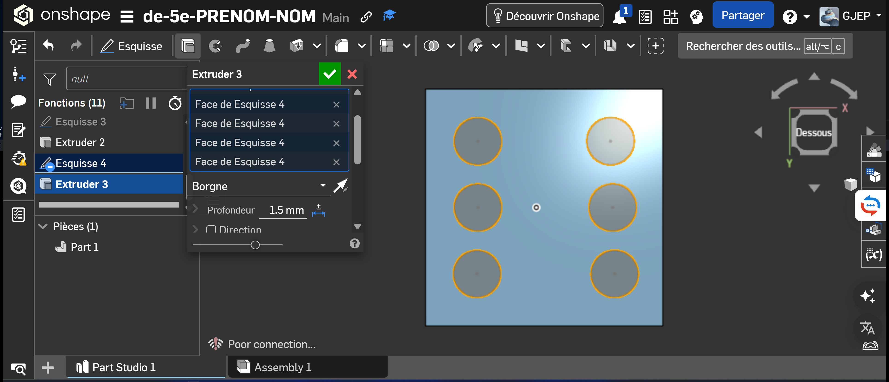
🎁 Pour aller plus vite l'an prochain — cherche motif dans Rechercher des outils…, en haut à droite.Trois outils apparaissent : Répétition linéaire, Répétition circulaire et Symétrique.
À savoir avant de commencer : Ces outils ne sont pas dans la barre d'esquisse : on ne les trouve que par la recherche. Constaté sur poste réel.
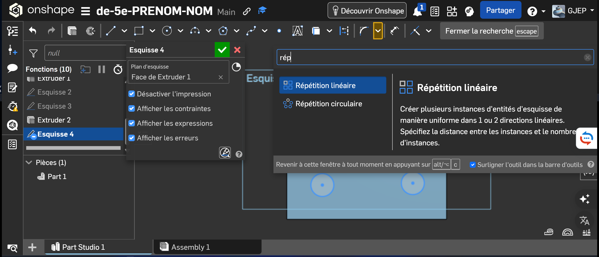
Répétition linéaire crée plusieurs copies régulières à partir d'un seul dessin : un cercle, deux colonnes, trois lignes. Retiens qu'il existe : un technicien ne répète pas six fois le même geste, il décrit la règle une fois.
Ce que tu dois obtenir :
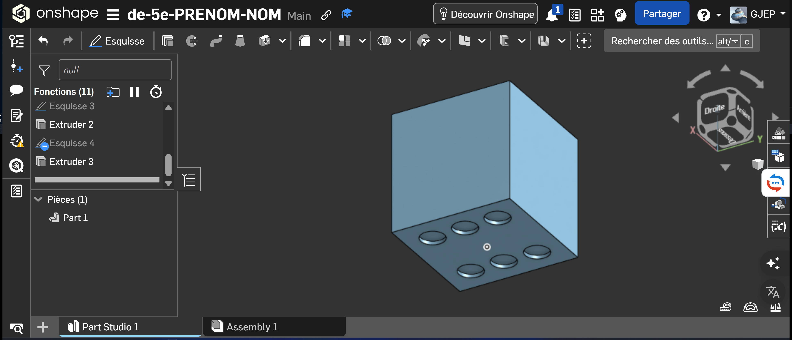
🎯 Tu peux passer à la suite quand : six creux alignés, et la face opposée en porte un seul — 1 et 6 font 7.
💾 Point de reprise. Tu n'as rien à enregistrer : c'est déjà fait, tout seul, depuis le début. Si le poste redémarrait maintenant, tu retrouverais ton travail exactement ici.
À toi de jouer
6 · Les quatre faces qui restent
À toi. Même gestes, quatre fois. La règle du dé : deux faces opposées font toujours 7. Donc 2 en face de 5, et 3 en face de 4.
À toi — mêmes gestes, quatre fois. Commence par la face du 2 : esquisse sur cette face, deux cercles de Ø10 en diagonale, chacun coté à 11 de ses deux bords, puis Retraité de 1.5.Les deux creux apparaissent d'un coup à la validation de l'enlèvement.
À savoir avant de commencer : Toutes les cotes du dé sont des multiples de la même idée : les points se placent à 11, 25 ou 39 du bord. Il n'y a rien d'autre à retenir.
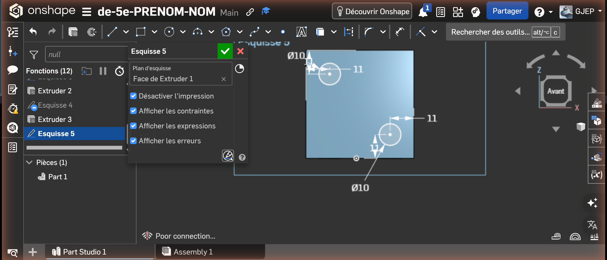
Enchaîne avec la face du 5 : quatre cercles aux coins (à 11 des bords) et un au centre (à 25).Cinq creux — et la règle des faces opposées est respectée : le 5 est en face du 2, 5+2=7.
À savoir avant de commencer : Sept cotes suffisent pour les cinq cercles — la contrainte Égal (touche e) propage le Ø10, et à la huitième cote l'esquisse proteste : « L'esquisse n'a pas pu être résolue. »
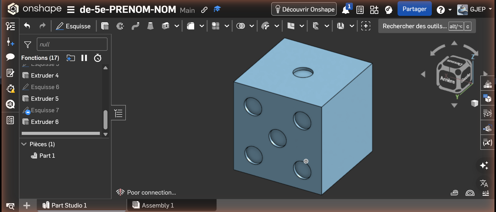
⚠️ Avant de valider, regarde la couleur des traits : en blanc, un cercle est complètement défini — cotes et contraintes le tiennent ; en bleu, il est encore libre, et un coup de souris peut le déplacer sans que rien ne prévienne. Une esquisse finie est une esquisse sans bleu. Constaté sur poste réel : un dé au rendu parfait cachait un cercle central à Ø9.917 — tracé à main levée, jamais coté — et deux cercles flottants. Le rendu ne prouve rien, la cote fait foi : double-clique un nombre faux et corrige-le, l'extrusion déjà passée se met à jour toute seule.
Termine par les faces du 3 (trois points en diagonale : deux coins à 11, le centre à 25) et du 4 (quatre coins à 11).Le dé est complet : six faces percées, et deux faces opposées font toujours 7 — 3 en face de 4.
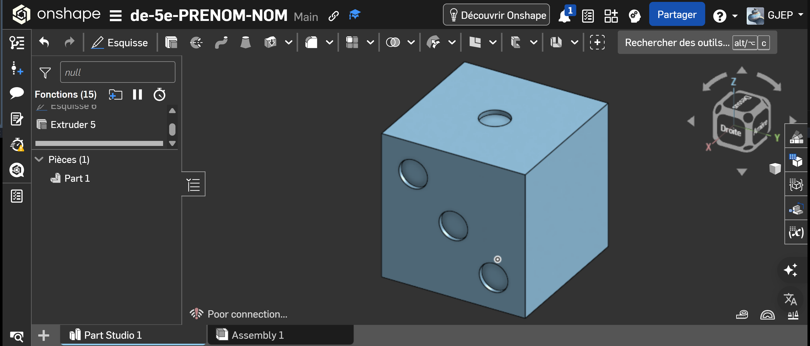
Ce que tu dois obtenir :
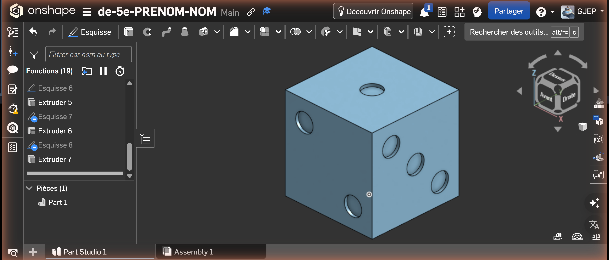
🎯 Tu peux passer à la suite quand : tes six faces sont percées, et en prenant le dé dans n'importe quel sens, deux faces opposées font 7.
💾 Point de reprise. Tu n'as rien à enregistrer : c'est déjà fait, tout seul, depuis le début. Si le poste redémarrait maintenant, tu retrouverais ton travail exactement ici.
Aide allégée
7 · Adoucir : les congés
Un dé aux arêtes vives ne roule pas et se casse au coin. On les arrondit : c'est un congé. Et pendant qu'on y est, on adoucira aussi le bord des points : c'est ce qui distingue un dé d'un cube percé.
Clique sur l'outil Congé, règle le rayon à 3, puis clique sur les douze arêtes du cube.Chaque arête sélectionnée s'éclaire, et l'aperçu montre l'arrondi.
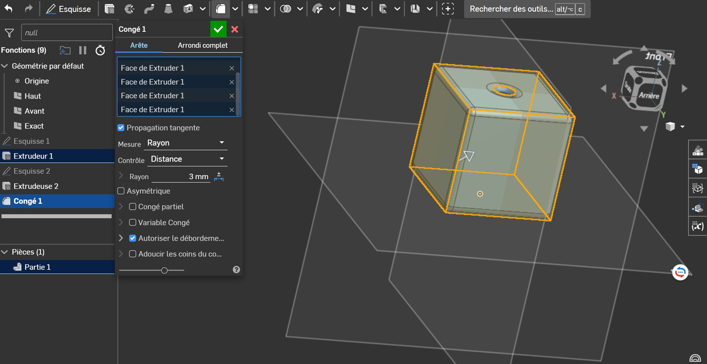
⚠️ 3 mm est un exemple : c'est le rayon qui adoucit sans dévorer les creux. Essaie 1 mm, puis 6 mm, et garde celui que tu préfères.
Valide.Le dé perd ses angles vifs. Il ressemble enfin à un dé.
À savoir avant de commencer : Fais le tour du dé à la souris : une arête oubliée ne se voit pas du premier coup d'œil, surtout si elle est du côté opposé à la vue. S'il en reste une vive, ne crée pas un deuxième congé : double-clique sur Congé 1 dans l'arbre — le panneau se rouvre avec sa liste et son rayon — puis clique le trait de l'arête manquante : la liste s'allonge d'une ligne, coche verte.
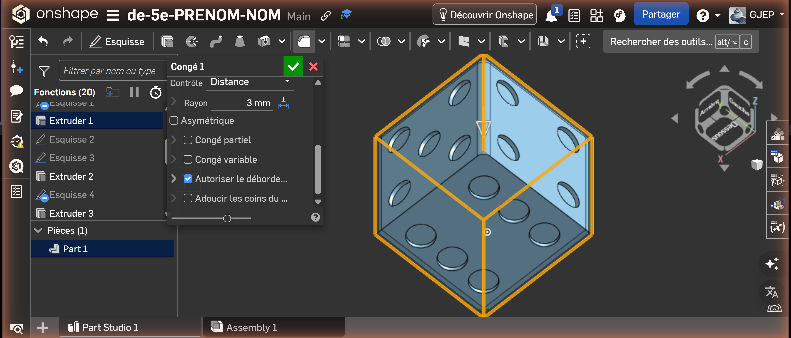
⚠️ Attention en complétant : clique bien l'arête, pas la face à côté. Cliquer une face ajoute d'un coup TOUTES ses arêtes — y compris les cercles des points, qui prendraient 3 mm au lieu de 1. Si la liste grossit trop, retire la ligne fautive avec sa croix ×. Et pour vérifier au chiffre : clique la bande arrondie qui a remplacé l'arête — le panneau Mesure doit afficher Rayon : 3 mm. Une arête restée vive n'a pas de rayon à offrir.
Relance Congé, puis sélectionne le bord d'un point — le cercle qui délimite le creux, pas le fond.Le cercle se surligne en jaune, et l'aperçu montre le bord du point qui s'arrondit vers l'intérieur.
À savoir avant de commencer : Ne clique pas dans le creux : tu sélectionnerais la face du fond, et le logiciel refuserait. C'est bien l'arête circulaire qu'on veut.
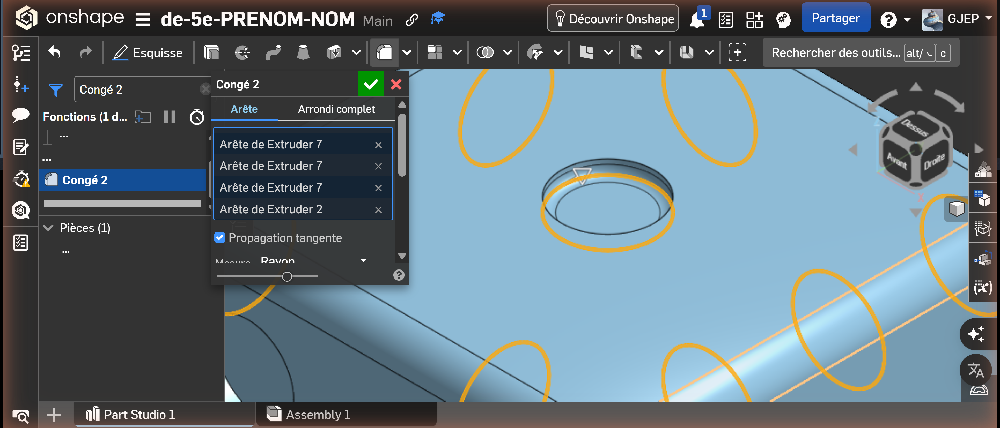
Sans fermer le panneau, sélectionne les vingt autres bords, puis règle le rayon à 1 et valide.Tous les points perdent leur arête vive : de loin, ils ne ressemblent plus à des trous percés mais à des creux moulés.
À savoir avant de commencer : Vingt et un clics, c'est long. Tu peux cliquer sur une face entière : Onshape prend alors toutes ses arêtes d'un coup.
⚠️ 1 mm est un exemple, et il est petit exprès : au-delà de 1,5 mm le congé mange le point et le rend flou. Essaie 2 mm pour voir, puis reviens.
Vérifie tes congés par la mesure, pas à l'œil. Clique dans le vide pour tout désélectionner, puis clique le fond d'un creux : une barre de mesure apparaît en bas à droite de la fenêtre. Clique-y la petite icône « Afficher les détails des mesures » (raccourci |) pour ouvrir le panneau Mesure : la ligne Aire s'y affiche.Si le panneau affiche Aire : 50.265 mm², le congé est fait : le fond a rétréci à Ø8. S'il affiche 78.540 mm², c'est le fond d'origine, Ø10 : ce point n'a pas de congé, même si l'écran semble montrer un arrondi.
À savoir avant de commencer : L'œil se trompe ici, et pas qu'un peu : la paroi du creux vue de biais fait un liseré clair qui ressemble exactement à un congé. Constaté sur poste réel — un contrôle visuel a validé vingt congés dont dix-neuf n'existaient pas ; la mesure les a démentis un par un. Deux nombres suffisent : 78,540 c'est π×5², 50,265 c'est π×4². Contrôle deux ou trois creux au hasard, sur des faces différentes.
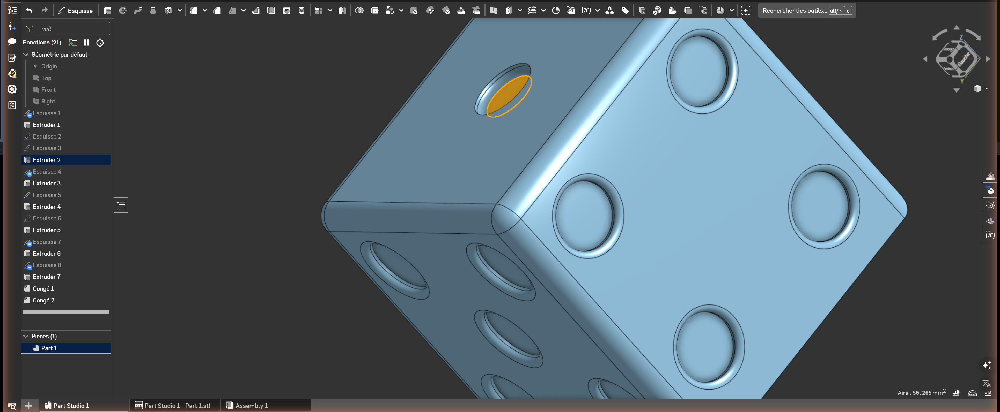
⚠️ Autre piège du même palier : en cliquant le cercle d'un creux, il suffit de 5 pixels d'écart pour attraper la face entière du dé — la sélection passe alors en magenta et le congé tombe en erreur. Travaille face à plat, zoomée, un creux à la fois. Et sache que le panneau peut se valider tout seul pendant une longue sélection : si ça arrive, double-clique sur la fonction pour la rouvrir et continue. Deux précautions pour la mesure elle-même : le panneau accumule les sélections — un clic dans le vide remet à zéro —, et si les plans de départ sont affichés, ils volent les clics : masque-les d'abord.
Fais la même mesure sur le fond d'un point que tu n'as pas encore traité, pour voir la différence de tes propres yeux.Aire : 78.540 mm² — c'est le fond d'origine, Ø10 : ce point-là attend encore son congé. Quand toutes tes mesures diront 50.265, le palier est vraiment fini.
⚠️ Ces deux captures viennent du même dé, le même jour : à l'écran, les deux creux semblaient identiques. Seule la mesure les distingue.
Regarde ton dé de côté, et compare-le à un vrai dé si tu en as un sous la main.Les points sont des creux à fond plat, adoucis sur le bord par le congé.
⚠️ Sur un dé du commerce, les points sont des calottes : le fond est arrondi, comme le creux d'une cuillère. Nous faisons plus simple — un cylindre peu profond, adouci au bord — parce qu'une calotte demanderait de soustraire une sphère, et ça, c'est un geste d'après. Un modèle n'est jamais l'objet : c'est une simplification qu'on assume et qu'on sait nommer.
Ce que tu dois obtenir :
🎯 Tu peux passer à la suite quand : aucune arête vive ne subsiste, et les creux sont intacts.
💾 Point de reprise. Tu n'as rien à enregistrer : c'est déjà fait, tout seul, depuis le début. Si le poste redémarrait maintenant, tu retrouverais ton travail exactement ici.
Aide détaillée
8 · Emporter son travail : nommer, exporter, retrouver
Un travail qu'on ne retrouve pas n'a pas eu lieu. Ce dernier palier ne fabrique rien : il met ta pièce à l'abri et te donne le fichier que la machine attend.
Vérifie le nom du document, en haut à gauche. S'il s'appelle encore « Sans titre », renomme-le maintenant : Dé - TES INITIALES.Le nom change dans le bandeau du haut.
À savoir avant de commencer : Dans une classe de vingt-huit, vingt-huit fichiers « Partie Studio 1 » ne se distinguent pas. Le nom du travail plus tes initiales, c'est ce qui te permettra de retrouver le tien.
Clic droit sur ta pièce dans l'arbre, en bas à gauche, puis Exportateur…Une fenêtre Exportateur s'ouvre, avec un nom de fichier, un format et des options.
À savoir avant de commencer : Le format proposé par défaut est PARASOLID : c'est le format interne d'Onshape, il n'intéresse aucun autre logiciel. Change-le.
Choisis le format STL.La liste propose une douzaine de formats. Deux comptent pour toi.
⚠️ STL décrit la surface par un maillage de triangles : c'est ce que mange une imprimante 3D, mais la pièce n'y est plus modifiable — on ne peut plus revenir sur une cote. STEP garde la géométrie exacte et s'ouvre dans n'importe quel autre logiciel de CAO. Autrement dit : STL pour fabriquer, STEP pour transmettre. En 5e, ton dé est fait pour être imprimé : prends STL.
Quand tu choisis STL, trois réglages apparaissent. Le plus important est Unités : mets Millimètre.Trois listes s'ajoutent : Format STL, Unités, Résolution.
À savoir avant de commencer : Un fichier STL ne contient que des nombres, sans unité écrite dedans : le logiciel de l'imprimante suppose des millimètres. Si tu laisses Mètre, un objet de 50 mm sera décrit par le nombre 0,05 — et la machine fabriquera un grain de cinquante microns, invisible. La description est juste, l'unité manque, la machine se trompe d'un facteur mille. C'est très exactement la question du TP : décrire assez précisément pour qu'une machine fabrique sans nous.
⚠️ Ce réglage est à Mètre par défaut. Constaté sur poste réel.
Laisse Format STL : Binaire et choisis Résolution : Fin.Les deux listes se ferment sur ces valeurs.
⚠️ Binaire ou texte, c'est la même géométrie écrite de deux façons : le texte se lit dans un éditeur — on y voit chaque triangle avec ses trois sommets — mais pèse cinq à six fois plus lourd. Ouvrir une fois un STL texte dans le Bloc-notes est une belle façon de voir qu'un objet 3D n'est qu'une liste de triangles. La résolution est la finesse de ce maillage : en Grossier, les facettes se voient sur les congés et les creux ronds ; en Fin, elles disparaissent, au prix d'un fichier plus gros.
Dans Options, choisis « Télécharger et stocker le fichier dans un nouvel onglet », puis valide.Le fichier descend dans tes téléchargements, et un onglet supplémentaire apparaît en bas de ton document Onshape.
À savoir avant de commencer : C'est le seul des trois choix qui protège ton travail. Sur un poste de collège, le dossier Téléchargements est souvent vidé, et tu ne repasseras pas forcément sur la même machine : un simple « Télécharger » revient à ne rien garder. Là, le fichier reste attaché au document et te suit.
⚠️ Laisse « Exporter les modèles avec l'axe Y vers le haut » décoché : cette case sert aux logiciels qui n'ont pas la même convention d'orientation.
Pour une simple image — un compte rendu, le cahier de texte — n'exporte rien.Une icône d'appareil photo, dans la barre verticale à droite de la vue 3D, produit un PNG propre du modèle.
À savoir avant de commencer : Un export n'est pas un enregistrement : c'est une traduction de la pièce vers ce qu'une machine ou un autre logiciel sait lire — et chaque traduction perd quelque chose. L'original, celui qui garde l'histoire complète et les cotes modifiables, reste dans Onshape.
Ce que tu dois obtenir :
🎯 Tu peux passer à la suite quand : ton document porte ton nom, le fichier exporté apparaît dans un onglet en bas, et tu sais par quels deux chemins le retrouver.
À toi de jouer
9 · 🎁 Ton dé, et pas celui du voisin — la couleur et la matière
Le travail est fini : ce qui suit ne sert à rien, et c'est exactement pour ça qu'on le fait. Deux couleurs bien choisies transforment un cube gris en objet qu'on a envie de poser sur un bureau. Et au passage, tu vas découvrir que dans un logiciel de conception, la couleur et la matière ne sont pas la même chose.
Fais un clic droit sur une face du dé, puis choisis Modifier l'apparence.Un sélecteur de couleur s'ouvre, et la face change de teinte en direct pendant que tu déplaces le curseur.
À savoir avant de commencer : Clique bien sur une face, pas sur la pièce entière dans l'arbre : sinon tout le dé changera d'un coup, et tu ne pourras plus distinguer les points du corps.
Donne au corps du dé une teinte sombre et chaude — un brun bronze, par exemple.Le cube prend sa couleur, mais les creux des points restent de la même teinte : on ne les voit presque plus.
⚠️ Le sélecteur de couleur accepte les valeurs RVB et le code hexadécimal — plus sûr que de viser à l'œil. Une petite palette de métaux pour choisir son duo :
Métal
R·V·B
Hexa
Bronze antique
110·79·42
#6E4F2A
Bronze
205·127·50
#CD7F32
Cuivre
184·115·51
#B87333
Laiton
181·166·66
#B5A642
Or métallique
212·175·55
#D4AF37
Or vif
255·215·0
#FFD700
Argent
192·192·192
#C0C0C0
Platine
229·228·226
#E5E4E2
Duos qui marchent : corps bronze antique + points or métallique, corps ardoise + points argent, corps noir + points or vif. Ce qui compte n'est pas la couleur, c'est le contraste entre les deux.
Sélectionne maintenant le fond d'un point, puis les vingt autres, et applique-leur une couleur claire et brillante — un doré.Les points ressortent d'un coup : le dé cesse d'être un bloc, il devient lisible à un mètre de distance.
À savoir avant de commencer : Sélectionne le fond du creux, pas son bord arrondi. Tu peux garder la touche Maj enfoncée pour en prendre plusieurs d'affilée.
⚠️ Or sur bronze, ivoire sur ardoise, blanc sur noir : ce qui compte n'est pas la couleur, c'est le contraste. Deux teintes proches donneront un dé illisible, même si chacune est jolie.
Change de registre : dans l'arbre à gauche, clic droit sur la pièce, puis Assigner un matériau… et choisis Bronze. (Une fois un matériau posé, cette ligne du menu s'appelle Modifier le matériau….)La fenêtre Matériau. Regarde la ligne Densité : c'est elle qui fabriquera la masse — le logiciel ne pèse pas, il calcule.La couleur du dé ne change pas. En revanche, ouvre Propriétés… par le même clic droit : la masse affichée a changé — le logiciel vient de recalculer le poids de l'objet.
À savoir avant de commencer : C'est le moment important de ce palier. L'apparence, c'est ce que l'objet a l'air d'être ; le matériau, c'est ce dont il est fait. Un dé doré à l'écran peut être en plastique dans le logiciel — et c'est le plastique qui sortira de l'imprimante.
Note la masse affichée, puis change le matériau pour ABS (un plastique d'impression 3D) et regarde-la de nouveau.La masse chute fortement : le même objet, le même volume, mais une matière huit fois moins dense.
⚠️ Constaté sur poste réel : 2.183 lb en bronze, 0.282 lb en ABS — près de huit fois moins, pour le même volume. Et remarque l'unité : selon le réglage du compte, Onshape affiche la masse en livres (lb) ; l'écart entre les matières, lui, ne dépend d'aucune unité.
Oriente la vue comme tu la trouves belle, puis fais une capture d'écran de ton dé.Ton objet, en perspective, ses points qui accrochent la lumière et ses arêtes adoucies.
À savoir avant de commencer : Avant la capture, fais le ménage de la vue : dans l'arbre, clic droit sur chacun des plans Top, Front et Right → Masquer — il ne reste que le dé. Et pour une image sans les traits noirs des arêtes, change le mode d'affichage (l'icône des modes, dans la barre à droite de la vue) : « Ombré sans arêtes » ne laisse que la matière et la lumière.
⚠️ Garde cette image : c'est elle que tu montreras, pas le fichier.
Ce que tu dois obtenir :
🎯 Tu peux passer à la suite quand : Ton dé a deux couleurs — corps et points — et tu sais dire la différence entre son apparence et son matériau.
💾 Point de reprise. Tu n'as rien à enregistrer : c'est déjà fait, tout seul, depuis le début. Si le poste redémarrait maintenant, tu retrouverais ton travail exactement ici.
➡ Et maintenant ?
Tu sais ouvrir un plan, esquisser, coter, extruder, enlever de la matière et adoucir une
arête. C'est tout ce qu'il faut pour dessiner l'objet de ton projet.